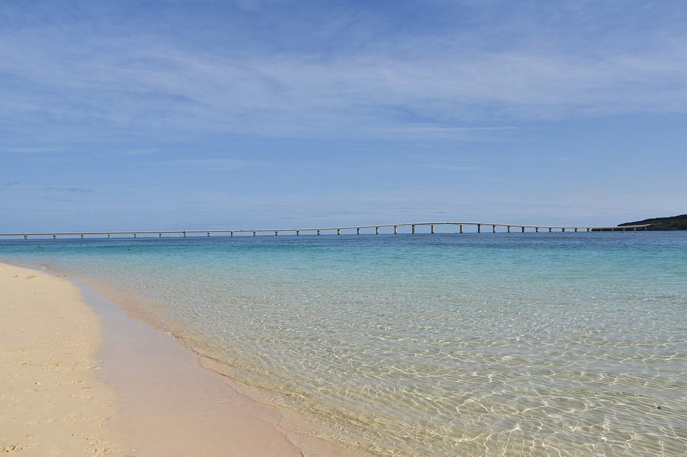

「宮古藍」不是行銷詞，是真的跟本島的海不一樣。這座島沒有定期渡輪、景點之間也散，所以玩法很單純——租台車，沿著海慢慢開。
島上移動方式先想好；想租車可先確認取還車地點、保險、費用及實際供車狀況。
選擇平良市區或海邊住宿後，向住宿方確認交通、房價及取消條件。
水上活動請向提供者確認實際島嶼、活動時段、天候及取消條件。
伊良部大橋、來間大橋、池間大橋——跨海自駕是宮古的招牌。光線好的早上開過去，海的層次最清楚；下午逆光就可惜了。
白天的白砂很美，但在地的玩法是傍晚再回去一趟——夕陽落在來間大橋後面，人也少了一半。
宮古的好，是「沒有要去哪裡」的下午。留半天給海景咖啡和臨時起意，比多塞一個景點值得。
航班、租車、行程怎麼排——歡迎在 Threads（@okinawa.kaupue）聊聊；即時天氣、交通及服務狀況請直接向官方或提供者確認。